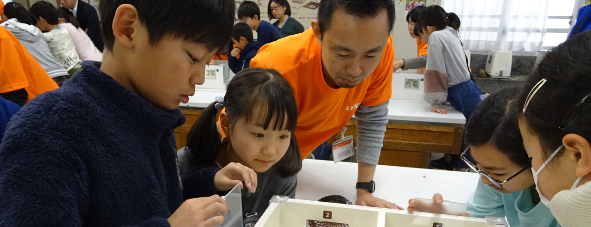

持続可能な社会を目指して
- 


LIXILではグループ全体でサステナビリティへの取り組みを進めています。
LIXILおよびグループ会社全体のサステナビリティ報告は、グローバルサイトで公開しています。年次報告を行い、重要データについては第三者保証を得ています。以下リンクをご覧ください。
コミットメント ／ 推進体制と重要課題の特定、CR戦略 ／ 3つの優先取組分野 ／ 従業員 ／ 環境 ／ 社会 ／ お客様とサプライチェーン
本サイトでは、日本での社会課題を踏まえ、LIXILとその子会社の国内での活動を中心に記載しています。
事業を行う地域社会の中での取り組みや、日本国内の従業員の働く環境について紹介します。